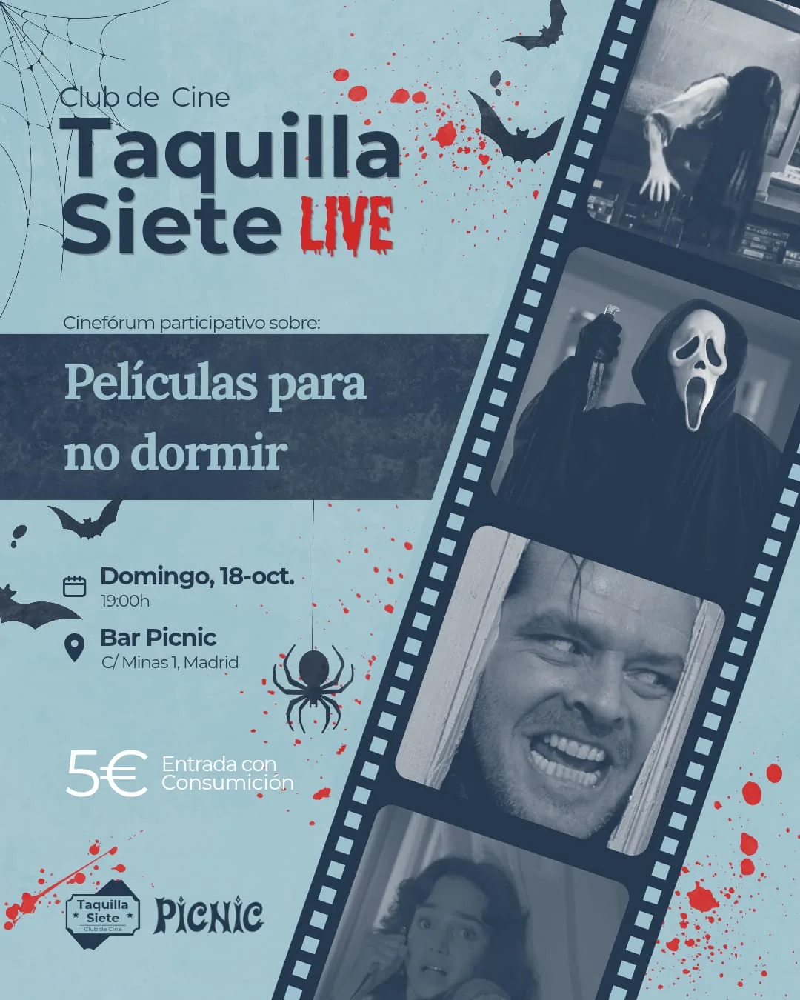

Taquilla Siete Live · Bar Picnic, Madrid
Domingo 18 de octubre de 2026, 19:00h — Bar Picnic (C/ Minas 1, Madrid). Entrada: 5€ con consumición.

Taquilla Siete Live es nuestro cinefórum participativo en Madrid: al llegar escribes en una tarjeta tu nombre y una película relacionada con la temática de la noche, sacamos tarjetas de una urna al azar y quien sale sube al escenario a contarnos su película. No hace falta ser experto ni traer nada preparado. Más sobre Taquilla Siete Live.
← Volver a Taquilla Siete Live